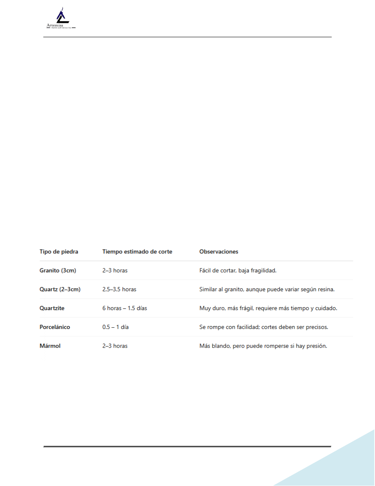

NORMA PARA FABRICACION STONE
Revisión 1.0
Page 1 of 19
NORMA DETALLADA DE ACTIVIDADES Y TIEMPOS EN FABRICACION STONE
PARTE 1: ELEMENTOS GENERALES DE LA NORMA
1.1. Equipo y Herramientas Necesarias
•
Pulidora manual con pads diamantados (60, 120, 220, etc.)
•
Mesa de trabajo con plomos
•
Resina o curador Akemi
•
Disco de corte (según tipo de piedra)
•
Sierra o router para agujeros
•
Gafas, delantal, guantes, protección respiratoria y tapones de seguridad
1.2. Tiempo estimado de corte (estimado por cocina de tamaño medio: